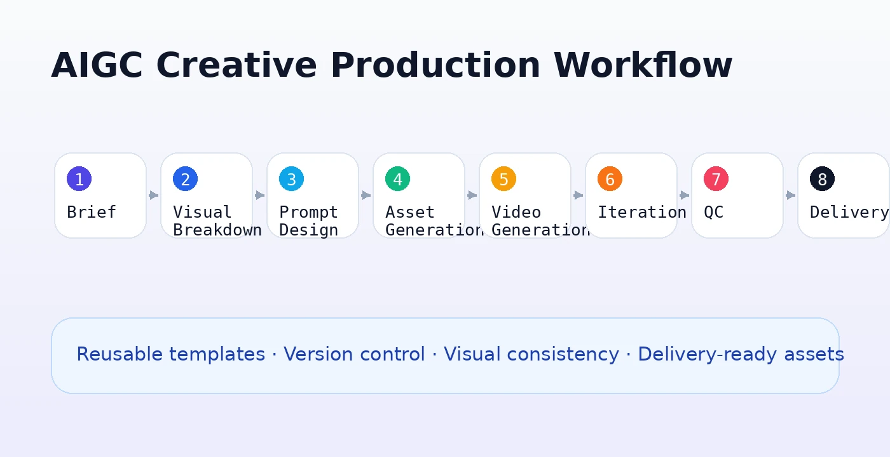

Bloodbound Vengeance
Poster / KVAIGC
魔幻复仇吸血鬼题材短剧的海报 KV、宣发封面与视频素材案例。
A gothic vampire revenge case covering posters, campaign visuals, and video assets.
AI 视觉内容生产｜出海增长素材｜创意工作流｜3D AI Demo｜AI 工具原型
AI Visual Content Production · Global Creative Assets · Workflow Design · 3D AI Demo · AI Tool Prototypes
我专注于 AIGC 内容生产与 AI 创意工作流落地，参与出海短剧、海报 KV、视频素材、AI 平台 Demo、桌宠和内容工具原型制作，擅长将创意需求拆解为可执行、可复用、可迭代的 AI 生产流程。
I focus on AI-assisted creative production, including visual assets, short-form video content, campaign visuals, product demos, desktop pet prototypes, and AIGC workflow tools.
我拥有广告学背景和真实商业 AIGC 内容生产经验，当前主要参与出海短剧、AI 视觉资产、海报 KV、宣发封面、视频素材、AI 平台测试与 Demo 制作等工作。
我的优势不是单纯使用 AI 工具生成画面，而是将创意目标拆解为可执行的生产流程：从 brief 理解、视觉拆解、提示词设计、素材生成、版本迭代、质量检查到最终交付，形成可复用的工作流和内容资产。
I have a background in advertising and hands-on experience in commercial AIGC content production, including global short-form drama assets, posters, campaign visuals, video materials, AI platform testing, and demo production.
My strength is not only using AI tools, but also breaking creative goals into repeatable workflows: from brief understanding, visual planning, prompt design, asset generation, iteration, quality control, to final delivery.
首页只展示核心项目入口：视频内容、剧集视觉、桌宠与工具原型。每个项目后续可以继续扩展成详情页。
Key project entries covering AI video production, campaign visuals, desktop pet prototypes, and workflow tools.
魔幻复仇吸血鬼题材短剧的海报 KV、宣发封面与视频素材案例。
A gothic vampire revenge case covering posters, campaign visuals, and video assets.
独立短剧剧集素材片段，展示成片剪辑、海报替换和视频交付能力。
A short drama episode clip showing editing, campaign visual integration, and delivery.

面向 AIGC 素材生产的本地图片查重工具原型。
A local image deduplication prototype for AIGC asset workflows.

方块小猪与暹罗猫桌宠原型，验证角色素材到本地互动 Demo 的链路。
Blocky pig and Siamese cat desktop pet prototypes for local interactive demos.
以下为压缩预览片段，用于展示 AIGC 视频生成、粗剪、返修、节奏整合和成片交付能力。完整项目可按面试需要进一步展示。
Compressed preview clips showing AI video generation, editing, shot refinement, pacing, and delivery.
剧集成片片段，展示 AI 视频素材整合、短剧节奏与结尾海报替换。
Episode preview showing AI video asset integration, pacing, and ending poster replacement.
都市言情 / 悬疑氛围类视频素材，关注人物情绪与场景氛围。
Romance-suspense visual asset focusing on character emotion and atmosphere.
补充视频片段，用于展示镜头资产、画面质感和短剧制作链路。
Additional preview for shot assets, visual quality, and short drama production workflow.
替换原失败 EP1 的可用片段，展示哥特复仇题材的 AI 视频生成、镜头整合与短剧交付。
Usable replacement for the failed EP1 preview, showing gothic revenge AI video generation, shot integration, and short drama delivery.
魔幻复仇题材视频素材片段，与海报 KV 形成完整项目链路。
Gothic vampire video asset connected with the poster and campaign visual case.
注：网页仅展示安全压缩预览，不公开完整公司内部项目、源文件或敏感素材。
Note: Only safe compressed previews are shown here. Full internal materials and source files are not publicly shared.
《Bloodbound Vengeance》系列展示横版主视觉、竖版封面、移动端宣发图和多版本气氛探索，强调商业宣发适配而非单纯图片展示。
Bloodbound Vengeance visual explorations across horizontal key visuals, vertical covers, mobile promotional assets, and atmosphere variations.


制作重点：暗黑哥特题材识别、人物关系张力、标题区规划、横竖版比例适配、宣发封面与视频素材的一致性。
Production focus: gothic genre identity, character tension, title placement, horizontal/vertical adaptation, and consistency between campaign visuals and video assets.
这些项目用于展示“内容生产问题 → 工具需求 → 可运行原型”的转化能力，不包装成工程师作品，而是作为 AI 辅助原型和创作者工作流工具。
These projects demonstrate turning content production pain points into lightweight, runnable prototypes and workflow-support tools.
Windows 本地图片查重 MVP，不上传图片、不修改原图，支持完全重复与视觉相似检测，服务 AIGC 批量素材整理。
Windows local image deduplication MVP for exact and visual similarity detection in AIGC asset workflows.

桌面硬件监控悬浮组件，展示 CPU、GPU、RAM 状态，支持置顶、锁定、透明度和鼠标穿透等创作者工作流功能。
A desktop performance monitor widget showing CPU, GPU, and RAM status with always-on-top, lock, transparency, and mouse-through modes.

方块小猪与暹罗猫桌宠原型，支持本地 EXE、拖拽互动、动作切换、右键菜单和资源配置扩展。
Desktop pet prototypes with standalone EXE builds, draggable interaction, action switching, right-click menu, and configurable assets.
该个人实验用于验证 AI 3D 资产从生成到互动 Demo 的落地流程：Meshy 生成模型，Blender 进行资产检查，Godot 接入桌面互动应用。当前作为进行中项目展示。
This ongoing personal experiment validates the workflow from Meshy-generated 3D assets to Blender inspection and Godot desktop interaction demos.
我关注的不只是单张图或单条视频的生成效果，而是如何将创意需求转化为稳定、可复用、可协作的生产流程。
My focus is not only generating one good image or video, but turning creative requirements into stable, reusable, and collaborative production workflows.

作品集持续更新中。商业项目仅展示安全预览和流程说明，完整作品或 Demo 可在面试沟通中进一步展示。
This portfolio is continuously updated. Commercial projects are shown through safe previews and workflow descriptions only. Full demos can be shared during interviews when appropriate.